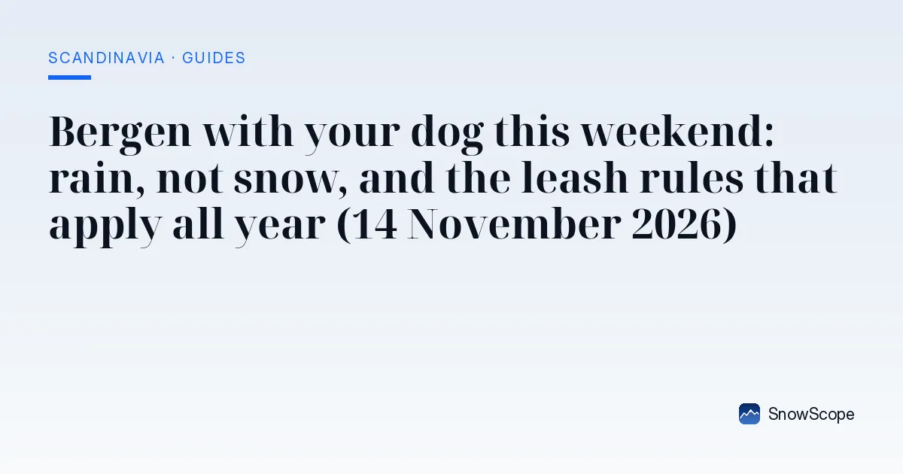

Bergen with your dog this weekend: rain, not snow, and the leash rules that apply all year (14 November 2026)
No snow for Bergen's dogs: the Florida station in town reported bare ground on Friday, and the nearest measured snow is 5 cm at Kvamskogen, 455 m up and 35 km away. The weekend is wet, very wet on Sunday, with around 38 to 40 mm of rain. Bergen also has stricter dog rules than most Norwegian cities, and they apply all year.
See the live snow forecast for Bergen in the SnowScope appSnow depth, powder alerts and the 3D map, free.
Rules that do not stop on 20 August
Bergen's own regulation applies all year, not only in the national leash period. In the city centre zone dogs must always be on a lead. In the public parks outside the centre the lead is required during the day and evening. Dogs must also be leashed on the built trails and signed paths of Fløyfjellet, Kanadaskogen, Langeskogen, Løvstien, Landåsfjellet and several other walking areas.

Four fenced dog yards
The municipality runs four free, fenced dog yards where the dog can run loose: at Liavatnet in Åsane, on Løvstien just above Solheimslien, at Tveitevannet between Fantoftåsen and Vilhelm Bjerknes' vei, and at Tennebekk by Gamle Tennebekksveien.
When the ski tracks open
On the lit ski tracks at Fløyen, Totland, Frotveit, Hjortland and Gullbotn the dog must be on a lead whenever the tracks can be used for skiing, and dog mess must be picked up on and along prepared ski tracks. With bare ground in town and rain through Monday, that is a rule for later this winter.
Tips for skiers
- Rain gear for you, a towel for the dog: Sunday is the wet day.
- Steep, wet paths on Fløyfjellet are slippery with leaves: keep the lead short on the stairs.
- For snow with a dog this weekend you would have to drive up to Kvamskogen, and even there the rain will eat the thin cover.
More maps (external sites)
References and credits
- MET Norway, free meteorological data (station reports) www.met.no/en/free-meteorological-data
- Ogimet, archive of the international SYNOP station reports (Norway, WMO block 01) www.ogimet.com/
- Lovdata, Forskrift om båndtvang m.m. for hund, Bergen kommune lovdata.no/dokument/LF/forskrift/2015-02-18-316
- Bergen kommune, dog yards and leash rules in Bergen (hundeluftegårder og båndtvang) www.bergen.kommune.no/innbyggerhjelpen/kultur-idrett-og-fritid/fritid/dyrehold/hundeluftegarder-og-bandtvang-i-bergen
- Open-Meteo, weather forecast data (ECMWF and ICON models) open-meteo.com/
About these numbers
Snow depth today: measured at weather stations on the morning of 13 November 2026 (MET Norway station reports in the international SYNOP format); a station reports the snow on its own small plot, so a few kilometres away and a hundred metres higher the ground can look different. Places and rules: the official pages listed below.
Cite this report
For research, teaching or the press: the numbers and charts are free to reuse under CC BY 4.0 with this citation.
SnowScope (2026), Bergen with your dog this weekend: rain, not snow, and the leash rules that apply all year (14 November 2026), https://snowscope.app/blog/en/2026/11/bergen-dog-walks-weekend-14-november-2026.html, accessed 2026-11-14
SnowScope (Atlas Labs). (2026, November 14). Bergen with your dog this weekend: rain, not snow, and the leash rules that apply all year (14 November 2026). SnowScope snow reports. https://snowscope.app/blog/en/2026/11/bergen-dog-walks-weekend-14-november-2026.html
BibTeX
@misc{snowscope2026bergendogwalksweekend14n,
author = {{SnowScope (Atlas Labs)}},
title = {Bergen with your dog this weekend: rain, not snow, and the leash rules that apply all year (14 November 2026)},
year = {2026},
month = nov,
howpublished = {\url{https://snowscope.app/blog/en/2026/11/bergen-dog-walks-weekend-14-november-2026.html}},
note = {Published 2026-11-14 13:29 UTC; accessed 2026-11-14}
}· CC BY 4.0 · Methods, data and tools →
Follow Bergen
Free: a message when fresh snow is coming, and the forecast every morning.
More snow reports

Norefjell received 14 cm of fresh snow in the past week, with 45 cm now on the upper slopes. Data from 13 November 2026.

On 14 November, Narvikfjellet has about 50 cm at the top and nothing at sea level. Snow depths vary with height by 1,000 metres.

Lofsdalen has 6–8 cm across the valley as of 13 November 2026, with 7 cm forecast over the next week and no rain threat.